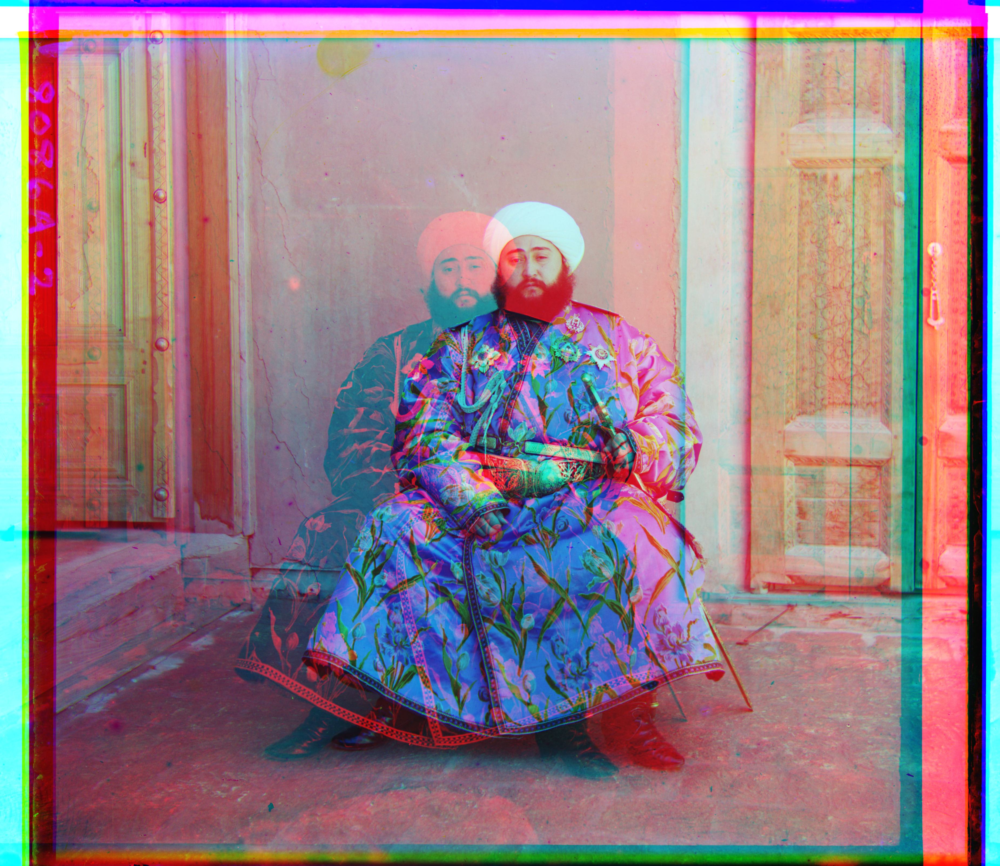
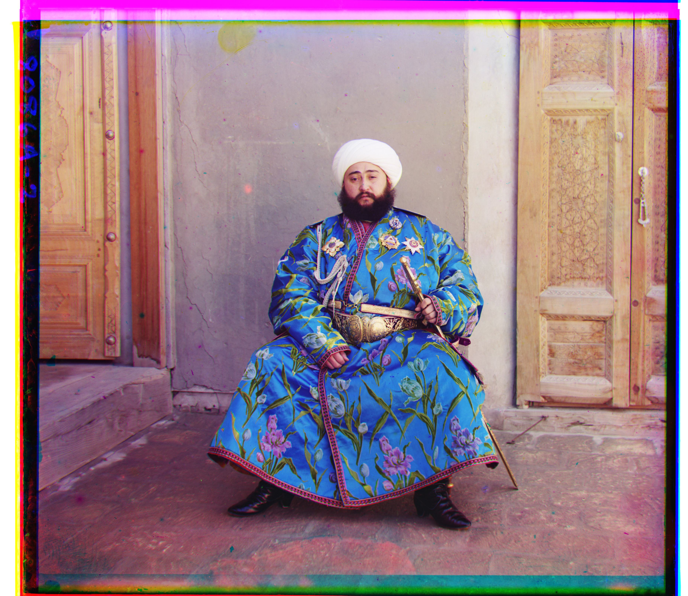

Project 01 · Fall 2026
Images of the
Russian Empire
Aligning B/G/R glass-plate exposures with NCC and a coarse-to-fine image pyramid.
Part 1 · Single-scale alignment
Single-scale alignment.
Input and goal

Each glass plate stores three monochrome exposures vertically in B, G, R order. I split the plate into three equal sections, use the blue channel as the reference, align green and red to blue, and stack the aligned channels as RGB.
Approach
For the low-resolution JPEGs, I test every integer shift in [-15, 15] and keep the highest NCC score.
Results


Part 2 · Multi-scale alignment
Coarse-to-fine pyramid search.
Large TIFF offsets are estimated at low resolution, then scaled and refined at each higher-resolution level.
Blue remains the reference. NCC scores the shared interior of each candidate translation; higher scores indicate a better match.
At the smallest level, I search a broad window. At each larger level, I only refine around the scaled estimate.
Why a pyramid?
Searching a large displacement range directly at full resolution is expensive. I estimate a rough shift at the smallest level, then refine only a small neighborhood at each finer level.
Border crop
Strong black and white plate borders can dominate NCC. I ignore the outer 10% while scoring; the final image is not cropped by this step.
Offset convention: (x, y) is the displacement applied to the named channel. Positive x moves right; positive y moves down.
Part 2 · Results
For full-resolution TIFFs, a coarse estimate is refined with small local searches. The same configuration was used throughout.


Complete offset and runtime record 14 supplied images
| Image | G→B | R→B | Runtime | Result |
|---|---|---|---|---|
| Cathedral | (2, 5) | (3, 12) | 0.26 s | Aligned |
| Church | (4, 25) | (-4, 58) | 3.06 s | Aligned |
| Emir of Bukhara | (24, 49) | (-205, 141) | 3.07 s | Red channel failed |
| Harvesters | (17, 60) | (13, 124) | 2.83 s | Aligned |
| Icon | (17, 41) | (23, 89) | 3.50 s | Aligned |
| Ilemselga | (7, 40) | (11, 130) | 3.43 s | Aligned |
| Melons | (11, 82) | (13, 178) | 3.10 s | Aligned |
| Monastery | (2, -3) | (2, 3) | 0.18 s | Aligned |
| Religious Painting | (3, 28) | (7, 68) | 3.36 s | Aligned |
| Self Portrait | (29, 79) | (37, 176) | 3.17 s | Aligned |
| Siren | (-6, 49) | (-25, 96) | 3.07 s | Aligned |
| Three Generations | (14, 53) | (11, 112) | 3.08 s | Aligned |
| Tobolsk | (3, 3) | (3, 6) | 0.20 s | Aligned |
| Wharf | (-7, 15) | (-16, 83) | 3.00 s | Aligned |
Part 3 · Additional examples
Three more collection plates
Three plates from the Library of Congress collection, using the same settings and no per-image tuning.


Part 4 · Failure analysis
Baseline failure: Emir of Bukhara.
Emir of Bukhara
Green aligns at (24, 49), but raw-intensity NCC sends red to (-205, 141). The red and blue channels have very different brightness patterns, so NCC selects a false match.
Fix
I kept the search and pyramid unchanged, but scored Sobel-gradient magnitude instead of raw intensity.
Limitations
The method assumes that misalignment is a single 2D translation. It cannot fully correct scene motion between exposures, such as moving people or water, or geometric differences from rotation and scale changes. Gradient features improve robustness to cross-channel brightness differences, but they do not change this translation-only model.
Part 5 · Bells & Whistles
Sobel-gradient matching.
Gradient magnitude compares edges instead of absolute brightness.
For Emir, the baseline produces visible ghosting. I compute Sobel gradient magnitude for each channel, run the same NCC pyramid on those features, then apply the resulting shifts to the original exposures.

(24, 49)
R→B (-205, 141)
Red channel fails under raw-pixel matching.

(24, 49)
R→B (40, 107)
Gradient features recover a much more plausible red displacement.
Result
Edges occur at the same locations across channels even when brightness differs. The gradient run changes only the scoring representation; the pyramid, NCC search, 10% border crop, and final RGB composition stay the same.